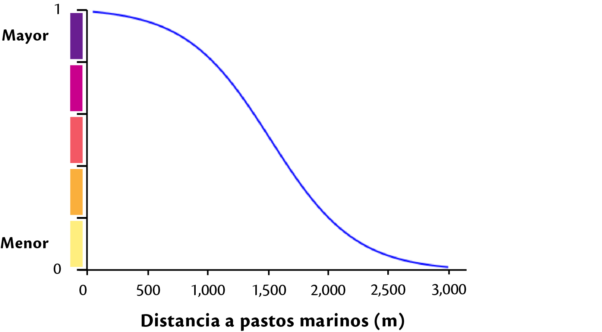

Criterio de resiliencia¶
Capacidad del sistema de resisitir, absober y sobreponerse al impacto de una amenaza.
Insumos¶
Biológica¶
Biodiversidad¶
Resiliencia - Biológica
Clasificación de tipos de vegetación costera (a mayor biodiversidad, mayor resiliencia) ejemplo: manglar, pastos marinos, vegetación duna, otros tipos de vegetación sumergible
peso local: 0.50
insumo: ifv_biodiversidad_yuc.tif
Definición: Esta capa representa la presencia de vegetación costera en la zona de estudio.
Tipo de función: Discreta
Categoria Descripción Peso 1 Dunas Costeras 0.33 2 Manglar 1.00 3 Tular 0.09 4 Vegetación de peten 0.31 5 vegetación arbustiva 0.06 Resultado: SIG/desarrollo/sig_papiit/entregables/resiliencia/biologica/biodiversidad_yuc/fv_biodiversidad_yuc.tif
Nombre de la capa: fv_biodiversidad_yuc.tif
issue:
Servicios ambientales¶
Presencia de tipos de vegetación que proveen protección a la línea de costa y hábitat (pastos marinos, dunas costeras y manglar)
Protección costera
Presencia de tipos de vegetación que proveen protección a la línea de costa (dunas costeras, manglares, humedales)
Resiliencia - Biológica - Servicios ambientales
Peso local: 0.75
Insumos:
Vegetación acúatica
Resiliencia - Biológica - Servicios ambientales - Protección costera
Peso local: 0.16
Insumo: ifv_v_acuatica.tif
Definición: Distancia entre los pastos y la línea de costa
Tipo de función: continua - Logística
Nota
Esta capa fue procesada en grass 7
archivo json: fv_exp_bio_v_acuatica.json

centro:1500, min:0, max:3000, saturacion: 3, k:0.0834999999999999Resultado: sig_papiit/entregables/resiliencia/biologica/serv_ambientales_yuc/prot_costera_yuc/fv_v_acuatica_yuc.tif
Nombre de la capa: fv_v_acuatica_yuc.tif
Dunas costeras
Resiliencia - Biológica - Servicios ambientales - Protección costera
Peso local: 0.14
Insumo: ifv_dunas_presencia_yuc.tif
Definición:
Tipo de función: Discreta (Presencia 1, ausencia 0)
Resultado: /sig_papiit/entregables/resiliencia/biologica/serv_ambientales_yuc/prot_costera_yuc/fv_dunas_presencia_yuc.tif
Nombre de la capa: fv_dunas_presencia_yuc.tif
Manglar
Resiliencia - Biológica - Servicios ambientales - Protección costera
Peso local:0.70
Insumo: ifv_manglar_presencia_yuc.tif
Definición:
Tipo de función: Discreta (Presencia 1, ausencia 0)
Resultado: /sig_papiit/entregables/resiliencia/biologica/serv_ambientales_yuc/prot_costera_yuc/fv_manglar_presencia_yuc.tif
Nombre de la capa: fv_manglar_presencia_yuc.tif
Integración
fv_proteccion_costera = fv_v_acuatica_yuc * 0.16 + fv_dunas_presencia_yuc * 0.14 + fv_manglar_presencia_yuc * 0.70
Resultado SIG/desarrollo/sig_papiit/entregables/resiliencia/biologica/serv_ambientales_yuc/prot_costera_yuc/fv_prot_costera_yuc.tif
Nombre de la capa: fv_prot_costera_yuc.tif falta metadato
issue Protección costera Agregar la liga del metadato
Provisión
Resiliencia - Biológica - Servicios ambientales
Presencia de tipos de vegetación que proveen alimento, materias primas, recursos genéticos
Peso local:0.50
Insumo: ifv_provision_yuc.tif
Definición:
Tipo de función: Discreta
Categoria Descripción Peso 1 Dunas Costeras 0.19 2 Manglar 0.56 3 Tular 0.05 4 Vegetación de peten 0.17 5 vegetación arbustiva 0.03 Resultado: /sig_papiit/entregables/resiliencia/biologica/serv_ambientales_yuc/provision_yuc/fv_provision_yuc.tif
Nombre de la capa: fv_provision_yuc.tif falta metadato
issue Provisión
Integración
serv_ambientales_yuc = fv_prot_costera_yuc * 0.75 + fv_provision_yuc * 0.25
Resultado
SIG/desarrollo/sig_papiit/entregables/resiliencia/salida/serv_ambientales.tif
Resultado¶
res_biologica = fv_biodiversidad_yuc * 0.50 + serv_ambientales_yuc * 0.50
Ruta: SIG/desarrollo/sig_papiit/entregables/resiliencia/salida/res_biologica.tif
Física¶
Ancho de playa¶
Resiliencia - Física
Peso local::0.62
Insumo: ifv_ancho_playa_yuc.tif
Definición: presencia del ancho de playa en la costa.
Tipo de función:
Resultado:
Nombre de la capa: fv_ancho_playa_yuc.tif
issue Ancho de playa
Dunas costeras¶
Resiliencia - Física
Peso local::0.27
Insumo: ifv_duna_yuc.tif
Definición: Esta capa representa la presencia de dunas costeras en la costa, El insumo ocupado para la generación de esta capa corresponde a información del POETY
Tipo de función:
Resultado:
Nombre de la capa: fv_duna_yuc.tif
issue Dunas costeras
Elevación¶
Resiliencia - Física
Peso local::0.06
Insumo: ifv_elev_yuc.tif
Definición: El insumo para la generación de esta capa proviene del Continuo de Elevaciones Mexicano (CEM) de INEGI, a la cual se le aplico una funcion de valor concava decreciente
- Tipo de función: continua - Concava creciente
Advertencia
por verificar
arhivo json:
min: -8 max: 25 gama: 0.01975 saturacion:
Resultado: SIG/desarrollo/sig_papiit/entregables/resiliencia/fisica/elev_yuc/fv_elev_yuc.tif
Nombre de la capa: fv_elev_yuc.tif
issue Elevación
Tipo de litoral¶
Resiliencia - Física
Peso local:0.05
Insumo: ifv_tipo_litoral_yuc.tif
Definición: Esta capa representa la presencia de diferentes tipos de litoral, estos fueron clasificados conforme a la siguiente tabla, el insumo ocupado es la capa de uso de suelo y vegetación serie VI de INEGI
Tipo de función: Discreta
Tipo de Vegetación Tipo de litoral Área desprovista de vegetación Arenoso Sin vegetación aparente Arenoso vegetación dunas costeras Arenoso Acuícola Artificial Urbano construido Artificial Agua Lodoso Peten Lodoso Vegetación halofila, hidrofila Lodoso Agricultura de riego anual Vegetado Agricultura de riego permanente Vegetado Manglar Vegetado Palmar, pastizal,manglar, tular Vegetado Vegetación secundaria (5 clases) Vegetado Quendando de esta forma los pesos asignados para cada categoría.
Categoria Descripción Peso 1 Arenoso 0.28 2 Artificial 0.05 3 Lodoso 0.52 4 Vegetado 0.15 Resultado: SIG/desarrollo/sig_papiit/entregables/resiliencia/fisica/t_litoral_yuc/fv_tipo_litoral_yuc.tif
Nombre de la capa: fv_tipo_litoral_yuc.tif
issue Tipo de litoral
Resultado¶
res_fisica = fv_ancho_playa_yuc * 0.62 + fv_duna_yuc * 0.27 + fv_elev_yuc * 0.06 + fv_tipo_litoral_yuc * 0.05
Ruta: SIG/desarrollo/sig_papiit/entregables/resiliencia/salida/res_fisica.tif
Integración¶
resiliencia = res_biologica * 0.50 + res_fisica * 0.50